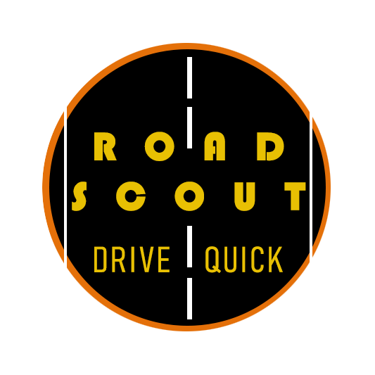

AI-Powered Applications
New Application
Featured Project

FotiFoti Art Agent: Multi-Platform Content Automation System
An autonomous AWS-powered agent that eliminates manual social media management. This production-grade system orchestrates artwork promotion across Instagram, Facebook, and web platforms—selecting content, generating AI captions with custom brand voice, and publishing on schedule without human intervention.
- Serverless AWS architecture: EventBridge scheduling, Lambda execution, S3 storage, DynamoDB state management, Secrets Manager security
- AI-powered content generation: OpenAI GPT-4o creates unique captions with role prompts through enforced creativity rules
- Cross-platform automation: Instagram Graph API (container creation + polling), Facebook Page API, GitHub repository updates
- Zero-touch artwork sync: Automatically discovers new files in S3, prevents duplicate posts via DynamoDB tracking
- Production-ready infrastructure: Retry logic, CloudWatch logging, secure token management, 60-second execution window
- Business impact: Currently posts every 3 days indefinitely—60+ posts/year with consistent brand voice, freeing creators to focus on production
Tech Stack: Python 3.12 • AWS Lambda • EventBridge • S3 • DynamoDB • Secrets Manager • OpenAI API • Meta Graph API • GitHub API
Additional Projects
Hard-E: Production Multi-Agent Sales Assistant
- Hybrid orchestration architecture (OpenAI Agents SDK + manual streaming)
- Stateful conversation management for complex multi-turn workflows
- Dual-environment AWS deployment with Nginx, systemd, SSL automation
- LLM-powered entity extraction handling speech-to-text artifacts
- Real-time CRM integration across multiple knowledge base sources

RoadScout: Podcast & YouTube Summarizer
- Fetches transcripts automatically from any YouTube link
- Generates persona-driven AI summaries using GPT-4.1
- Creates a single, stitched MP3 audio file for offline listening
- Sends free push notifications to your phone when tasks are complete
- Incorporates personal ntfy subscription into workflow
Oriana: Article Summarizer & Reader
- AI-powered summarization with ElevenLabs TTS
- Supports URLs, text pasting, and multi-language
- Offers MP3 downloads for offline listening
- Creates news or other scripts from single or multiple articles
- Synthesizes multiple articles into cohesive narratives
- Investigative journalism but with an ai assistant
- Truthful and professional writing for demanding schedules

Resume Tailor
- Version 1: Resume analysis and PDF output
- Version 2: Enhanced AI customization and UI

Oriana: AI Investigative Assistant
- Sophisticated AI journalism tool
- Advanced source management system
- Automated transcript generation
Let's Build Together
Interested in AI solutions? Let's collaborate—contact me to discuss your project!
Get in Touch